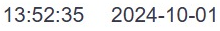
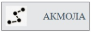

Faceplate Runtime
Для запуска Runtime необходимо в адресной строке браузера (Google Chrome, Mozilla Firefox, YandexBrowser, Apple Safari, Opera) ввести следующую строку:
x.x.x.x:9000/fp/runtime
где x.x.x.x - IP-адрес соответствующего узла (НДЦ или РДЦ).
Далее появляется окно авторизации, в котором оператор должен ввести свои учетные данные — логин и пароль:
Рисунок 1. Окно авторизации
Если авторизация прошла успешно, то открывается главное окно Runtime:
Рисунок 2. Активное окно Runtime
Главное окно представляет собой рабочую область, в которой отображаются мнемосхемы, тренды и элементы управления системой. Это центральное место, где оператор выполняет основные действия по мониторингу, управлению объектами и анализу данных.
Панель навигации
На верхней панели, непосредственно под адресной строкой расположены следующие элементы управления:
Боковое меню: Позволяет открыть боковое меню, где есть возможность: -Открыть древовидный список доступных мнемосхем, что позволяет оператору выбирать и переключаться между различными мнемосхемами. -Открыть журнал сообщений, который используется для работы с историческими сообщениями и событиями, зафиксированными системой. -Открыть диалог выбора трендов, где можно создать, настроить и просматривать тренды. -Вернуться в среду разработки Studio. -Завершить работу с системой и выйти из интерфейса. | |
|---|---|
История открытия схем: Позволяет оператору просматривать предыдущие действия по открытию схем. | |
Список сообщений: Обеспечивает быстрый доступ к списку сообщений для анализа и работы. | |
Навигация по иерархии схем: При нажатии стрелок «влево» и «вправо» открывается следующая или предыдущая навигационная схема по уровню иерархии. | |
Текущая схема: Отображается на экране с названием, указывающим на открытую в данный момент схему. | |
Функция зума: Доступна для увеличения и уменьшения масштаба схем. | |
 | Текущие дата и время: Отображаются на экране в реальном времени. |
Режим работы системы: Отображает состояние режима работы системы (Run — Runtime запущен, Stop — остановлен). | |
Имя пользователя: Информация о текущем пользователе, работающем в системе. | |
Избранные схемы: Доступ к избранным схемам, которые предварительно настраиваются администратором в Studio. | |
где  - навигационная схема, а | |
Кнопки быстрой навигации: Обеспечивают удобный доступ для перехода между схемами. | |
Данные из полей SE: Галочки отображают на выбранной схеме данные из полей модуля оценки состояния (SE). | |
Навигационная мнемосхема и её использование
Навигационная мнемосхема представляет собой интерактивную схему, которая отображает состояние системы в реальном времени и позволяет быстро переходить к детализированным объектам.
Рисунок 3. Навигационная мнемосхема региона
Быстрый доступ: Двойной клик правой кнопкой мыши на объект (например, узел АЛМА) открывает дополнительную информационную панель о характеристиках объекта:
Рисунок 4. Информационное окно подстанции
При клике левой кнопкой мыши на том же элементе открывается мнемосхема, которую также можно открыть через боковое меню (п. 3.1):
Рисунок 5. Мнемосхема подстанции